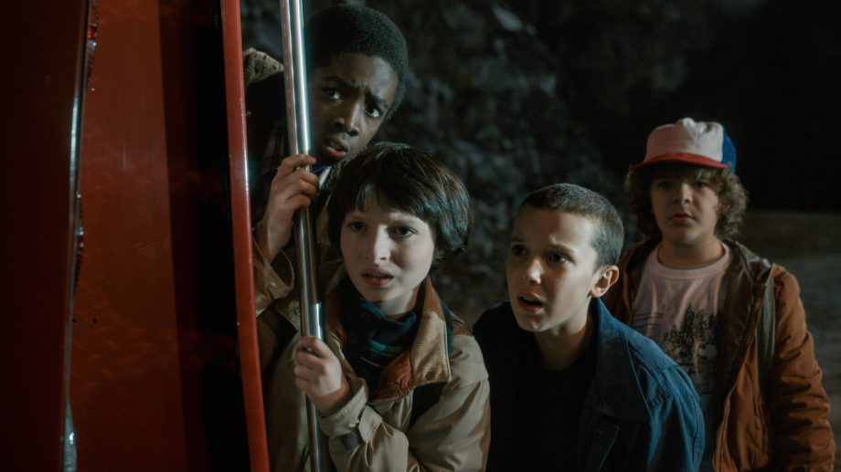
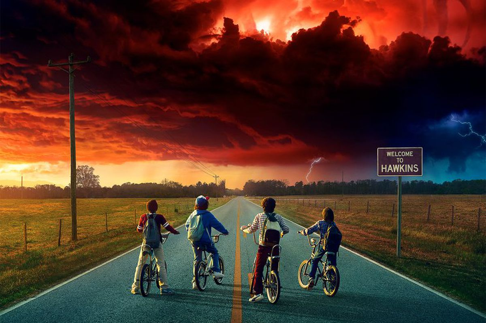
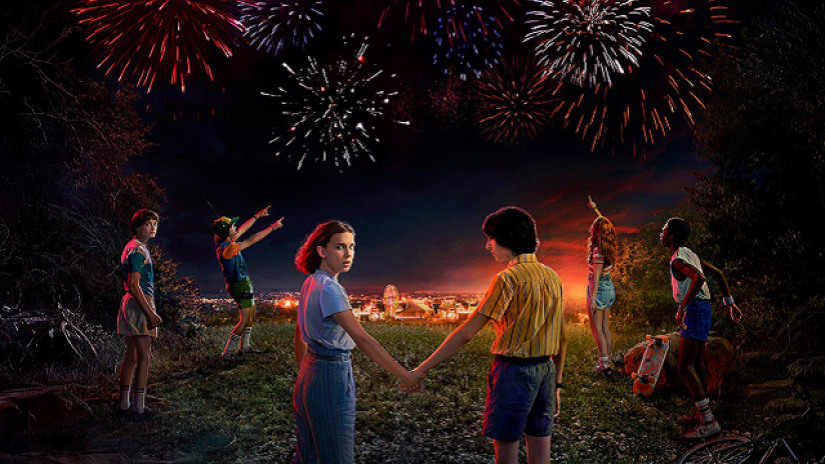

 Season 1 - The first season begins in November 1983, when researchers at Hawkins National Laboratory open a rift to the "Upside Down", an alternate dimension. A monster from the Upside Down escapes and abducts a boy named Will Byers. His mother, Joyce, and the town's police chief, Jim Hopper, search for Will. At the same time, a young psychokinetic girl called Eleven escapes from the laboratory and assists Will's friends, Mike, Dustin, and Lucas, in their own efforts to find Will.
 Season 2 - On Halloween 1984, Will Byers finds himself the target of the Upside Down a year after his disappearance as a large tentacled figure named the Mind Flayer soon terrorises the citizens of Hawkins, drawing back Joyce and Hopper as well as Will's close friends; Mike, Dustin and Lucas. The group along with Californian newcomer Max must join forces once again to prevent the threat from increasing.
 Season 3 - In mid-1985, when the box office was dominated by the presence of Back to the Future, Mike and Eleven have developed a romantic relationship, as have Max and Lucas. However, one year after the defeat of the Mind Flayer, things are not all that they seem in Hawkins. The town has a new leader, the morally corrupt Mayor Kline, whose administration supported and presided over the construction of the new Starcourt Mall. With the Fourth of July approaching, strange things start to happen: Lucas' sister Erica discovers a mysterious new threat,[1] and a lifeguard at the community pool suddenly disappears, triggering fear in those that still have the events from the previous year still fresh in their minds.